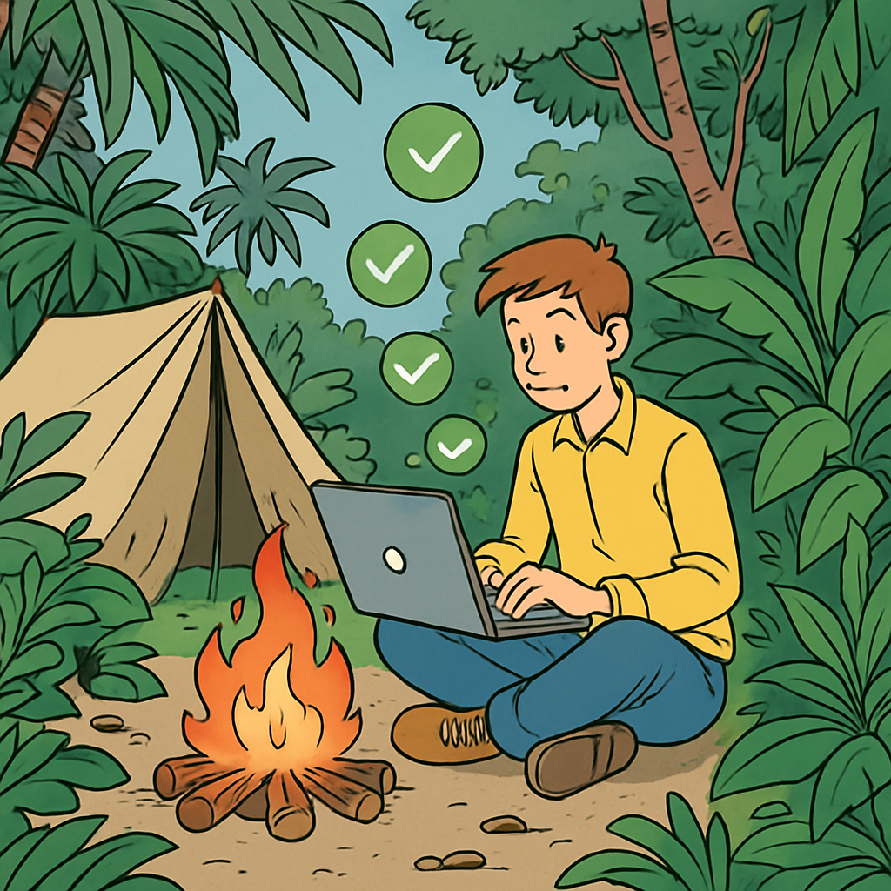

Microlearning
Moderne IDEs wie VS Code, IntelliJ oder Visual Studio sind mächtig – aber sie verbrauchen auch ordentlich CPU und RAM, besonders mit vielen Extensions.

Jede aktive Extension läuft als Hintergrundprozess: Linter, Formatter, Language Server, AI Copilots – alles braucht Ressourcen.
- Dark Themes auf OLED-Displays sparen bis zu 60% Energie gegenüber hellen Themes
- Auto-Save mit sehr kurzen Intervallen löst ständig Disk-Writes und Extension-Neuauswertungen aus
- Features wie Real-Time Type Checking oder AI Autocomplete sind CPU-intensiv – lohnen sie sich immer?
Tat / Einstellung
Optimiere dein IDE-Setup – schlanker arbeiten, weniger Ressourcen verbrauchen.
Aufgabe 1: Extensions aufräumen
- Öffne deine IDE und zähle deine installierten Extensions/Plugins
- VS Code:
Ctrl+Shift+X(oderCmd+Shift+X) → «Installed» - Deaktiviere mindestens 2 Extensions, die du nicht regelmässig brauchst
- Rechtsklick → «Disable» (nicht gleich löschen – du kannst sie jederzeit wieder aktivieren)
Aufgabe 2: Theme & Auto-Save prüfen
- Hast du ein OLED-Display? Aktiviere ein dunkles Theme.
- Überprüfe deine Auto-Save-Einstellung:
Files: Auto SaveaufafterDelaymit mindestens 1000ms statt instant
Reflexion
Wo ist die Grenze zwischen Produktivität und Ressourcenverbrauch? Wann ist eine Extension den Energieverbrauch wert – und wann nicht?
Eine Extension, die dir 30 Minuten pro Tag spart, ist den Strom wert. Eine, die du einmal im Monat brauchst, kannst du bei Bedarf aktivieren. Die Frage ist nicht «alles oder nichts», sondern «bewusst wählen».
Challenge
Erstelle zwei VS Code Profiles:
- «Lean» – nur die nötigsten Extensions (Sprache, Formatter, Git)
- «Full» – alles, was du für spezielle Projekte brauchst
VS Code: Ctrl+Shift+P → Profiles: Create Profile
Wechsle eine Woche lang zum Lean-Profil und berichte, ob du einen Unterschied merkst.